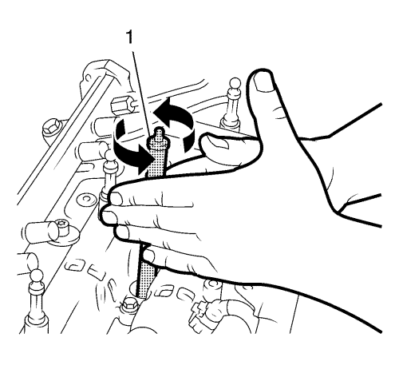
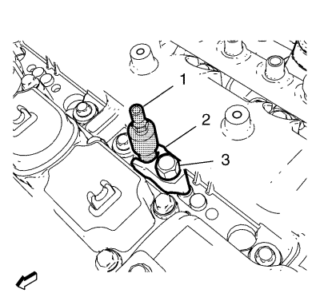
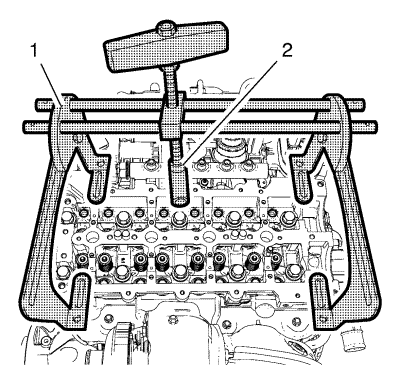
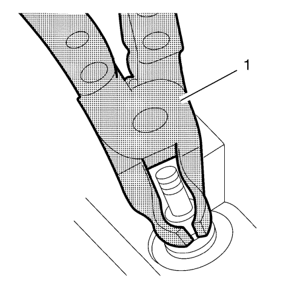

Sustitución del muelle de válvula y del retén de aceite del vástago de válvula
Herramientas especiales
| • | EN-46116 Junta del vástago de la herramienta de desmontaje y montaje |
| • | EN-47632 Herramienta de limpieza |
| • | EN-48247 Adaptador - Compresión del muelle de válvula |
| • | EN-49074 Compresor - Muelle de válvula universal |
| • | EN-50453 Adaptador - Compresión del aire |
Si desea informarse sobre herramientas regionales equivalentes, consulte Herramientas especiales .
Procedimiento de desmontaje
- Retire los 16 balancines de válvula. Consultar Sustitución del balancín de válvula .

- Limpie las superficies de sellado de las válvulas de inyección de la culata con la herramienta de limpieza EN-47632 (1) siguiendo este procedimiento:
| • | primero utilice el lado del cepillo para soltar la suciedad. |
| • | en segundo lugar, utilice el lado de la esponja para despegar la suciedad. |

- Monte el adaptador EN-50453 (1) en el cilindro 1.
- Monte el soporte de la válvula de inyección de combustible (2).
Precaución:Consulte Precaución con las fijaciones en la sección Prólogo.
- Monte el tornillo del soporte de la válvula de inyección de combustible (3) y apriételo a 20 N·m (15 lib. pie).

- Monte el compresor EN-49074 (1) con el adaptador EN-48247 (2).
Nota: El siguiente paso mantendrá la válvula asentada y evitará que caiga dentro del cilindro.
- Acople el tubo flexible del aire comprimido al adaptador EN-50453.
- Aplique aire comprimido al cilindro (1).
Nota: El adaptador EN-48247 debe colocarse en paralelo a los seguros de muelle de válvula para no dañar las herramientas ni los componentes del tren de válvulas.
- Presione el muelle de válvula y el seguro del muelle de válvula superior hasta que las chavetas de válvula dejen de verse afectadas por la carga del muelle. Extraiga las llaves de válvula.
- Extraiga el retén del muelle de la válvula y la propia válvula.

- Desmonte los retenes de aceite del vástago de válvula . Utilice la herramienta de desmontaje y montaje EN-46116 (1).
Procedimiento de montaje
- Monte los retenes de aceite del vástago de válvula NUEVOS. Utilice la herramienta de desmontaje y montaje EN-46116 (1).
- Monte el seguro del muelle de válvula y el muelle de válvula.
Nota: Asegúrese de que el cilindro está sujeto con aire comprimido.
- Empuje el compresor EN-49074 (1) lentamente hacia abajo con el adaptador EN-48247 hasta que las chavetas de válvula estén claramente acopladas.
- Desacople el tubo flexible del aire comprimido del adaptador EN-50453.
- Repita el procedimiento para el cilindro 2, 3 y 4.
- Retire el compresor EN-49074 (1) con el adaptador EN-48247 (2).
- Retire el tornillo del soporte de la válvula de inyección de combustible (3).
- Retire el soporte de la válvula de inyección de combustible (2).
- Retire el adaptador EN-50453 (1) del cilindro 1.
- Monte los 16 balancines de válvula. Consultar Sustitución del balancín de válvula .
| © Copyright Chevrolet. All rights reserved |